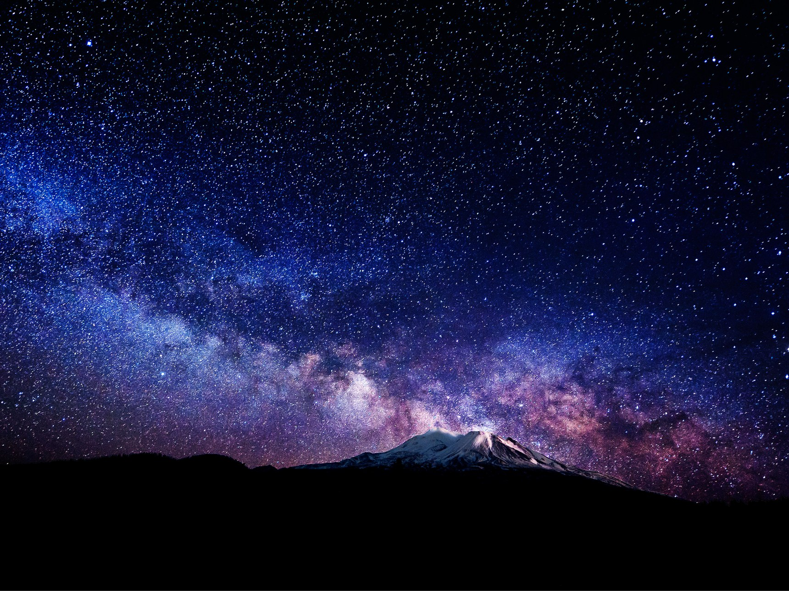

This is my About Me Page!
On this page you'll be able to see all the things I'm interested in such as pictures and websites.

Amazing night view in Seoul, Korea. Some interesting things about Korea is that students study excessively since the age of 10. This is why their country has progressed exponentially during the last 10 years. Having been dedicated so much, their repuations have grown to the point where their culture has been growing globally. A form of this is k-pop, which is something that has taken the world by storm.

Twinkling stars a against a blanket of darkness. The light of the stars are much older than us. They traveled for years just to reach us. Those stars might not even exist anymore, but their images from 1,000 to 1,000,000 years ago are still being sent to being sent to Earth. This contributes to the scientific field as it provides information of how light and images travel across far distances
